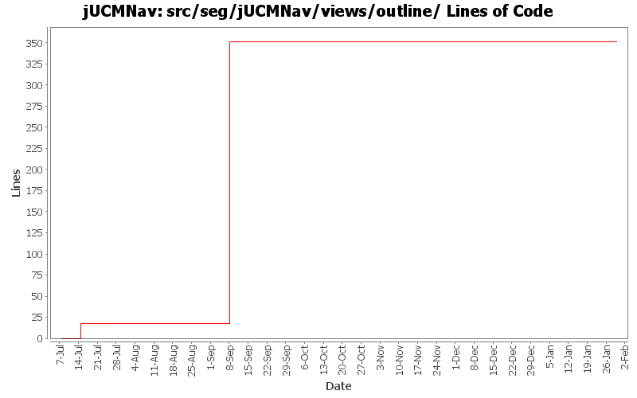

Summary Period: 2005-07-07 to 2006-01-29
[root]/src/seg/jUCMNav/views/outline

Total Lines Of Code:
351 (2006-03-31 18:01)
| Author | Changes | Lines of Code | Lines per Change |
|---|---|---|---|
| Totals | 8 (100.0%) | 351 (100.0%) | 43.8 |
| jkealey | 7 (87.5%) | 351 (100.0%) | 50.1 |
| jfroy | 1 (12.5%) | 0 (0.0%) | 0.0 |
Merge of GRL branch with the main trunk
0 lines of code changed in:
Extracted a bunch of strings, translated language files to French.
0 lines of code changed in:
added graphical overview in outline; according to my tests, it should be okay but needs to be tested more extensively
333 lines of code changed in:
added headers + package.html for all files in the seg.jUCMNav.views.* package. did not clean the files
18 lines of code changed in:
changed an old org.eclipse.gef string
0 lines of code changed in:
added javadoc for seg.jUCMNav.editors and seg.jUCMNav.editors.resourceManagement. Moved outline to seg.jUCMNav.views.outline package.
0 lines of code changed in:
Generated by StatCVS 0.2.4